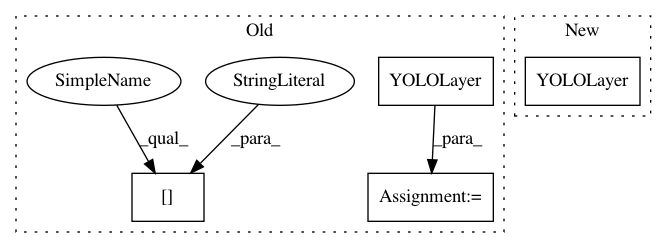

91f563c2a2baa5a120a81e91da19f29e9d37b42f,models.py,,create_modules,#Any#Any#,8
Before Change
// if i == 0:
// modules.add_module("BatchNorm2d_0", nn.BatchNorm2d(output_filters[-1], momentum=0.1))
if mdef["type"] == "convolutional":
bn = mdef["batch_normalize"]
filters = mdef["filters"]
size = mdef["size"]
stride = mdef["stride"] if "stride" in mdef else (mdef["stride_y"], mdef["stride_x"])
modules.add_module("Conv2d", nn.Conv2d(in_channels=output_filters[-1],
out_channels=filters,
kernel_size=size,
stride=stride,
padding=(size - 1) // 2 if mdef["pad"] else 0,
groups=mdef["groups"] if "groups" in mdef else 1,
bias=not bn))
if bn:
modules.add_module("BatchNorm2d", nn.BatchNorm2d(filters, momentum=0.03, eps=1E-4))
else:
routs.append(i) // detection output (goes into yolo layer)
if mdef["activation"] == "leaky": // activation study https://github.com/ultralytics/yolov3/issues/441
modules.add_module("activation", nn.LeakyReLU(0.1, inplace=True))
// modules.add_module("activation", nn.PReLU(num_parameters=1, init=0.10))
elif mdef["activation"] == "swish":
modules.add_module("activation", Swish())
elif mdef["type"] == "maxpool":
size = mdef["size"]
stride = mdef["stride"]
maxpool = nn.MaxPool2d(kernel_size=size, stride=stride, padding=(size - 1) // 2)
if size == 2 and stride == 1: // yolov3-tiny
modules.add_module("ZeroPad2d", nn.ZeroPad2d((0, 1, 0, 1)))
modules.add_module("MaxPool2d", maxpool)
else:
modules = maxpool
elif mdef["type"] == "upsample":
if ONNX_EXPORT: // explicitly state size, avoid scale_factor
g = (yolo_index + 1) * 2 / 32 // gain
modules = nn.Upsample(size=tuple(int(x * g) for x in img_size)) // img_size = (320, 192)
else:
modules = nn.Upsample(scale_factor=mdef["stride"])
elif mdef["type"] == "route": // nn.Sequential() placeholder for "route" layer
layers = mdef["layers"]
filters = sum([output_filters[l + 1 if l > 0 else l] for l in layers])
routs.extend([i + l if l < 0 else l for l in layers])
elif mdef["type"] == "shortcut": // nn.Sequential() placeholder for "shortcut" layer
layers = mdef["from"]
filters = output_filters[-1]
routs.extend([i + l if l < 0 else l for l in layers])
modules = WeightedFeatureFusion(layers=layers, weight="weights_type" in mdef)
elif mdef["type"] == "reorg3d": // yolov3-spp-pan-scale
pass
elif mdef["type"] == "yolo":
yolo_index += 1
l = mdef["from"] if "from" in mdef else []
modules = YOLOLayer(anchors=mdef["anchors"][mdef["mask"]], // anchor list
nc=mdef["classes"], // number of classes
img_size=img_size, // (416, 416)
yolo_index=yolo_index, // 0, 1, 2...
layers=l) // output layers
// Initialize preceding Conv2d() bias (https://arxiv.org/pdf/1708.02002.pdf section 3.3)
try:
After Change
elif mdef["type"] == "yolo":
yolo_index += 1
stride = [32, 16, 8, 4, 2][yolo_index] // P3-P7 stride
modules = YOLOLayer(anchors=mdef["anchors"][mdef["mask"]], // anchor list
nc=mdef["classes"], // number of classes
img_size=img_size, // (416, 416)
yolo_index=yolo_index, // 0, 1, 2...
layers=mdef["from"] if "from" in mdef else [], // output layers
stride=stride)
// Initialize preceding Conv2d() bias (https://arxiv.org/pdf/1708.02002.pdf section 3.3)
try:
bo = -4.5 // obj bias
In pattern: SUPERPATTERN
Frequency: 3
Non-data size: 4
Instances
Project Name: ultralytics/yolov3
Commit Name: 91f563c2a2baa5a120a81e91da19f29e9d37b42f
Time: 2020-04-02
Author: glenn.jocher@ultralytics.com
File Name: models.py
Class Name:
Method Name: create_modules
Project Name: eriklindernoren/PyTorch-YOLOv3
Commit Name: 569f8c42734ceb44eedf2c9e7753cfc2d593ac81
Time: 2018-05-27
Author: eriklindernoren@gmail.com
File Name: models.py
Class Name:
Method Name: create_modules
Project Name: ultralytics/yolov3
Commit Name: 682c2b27e7018c1ff3aae4607c48a2f742a985fe
Time: 2020-04-03
Author: glenn.jocher@ultralytics.com
File Name: models.py
Class Name:
Method Name: create_modules